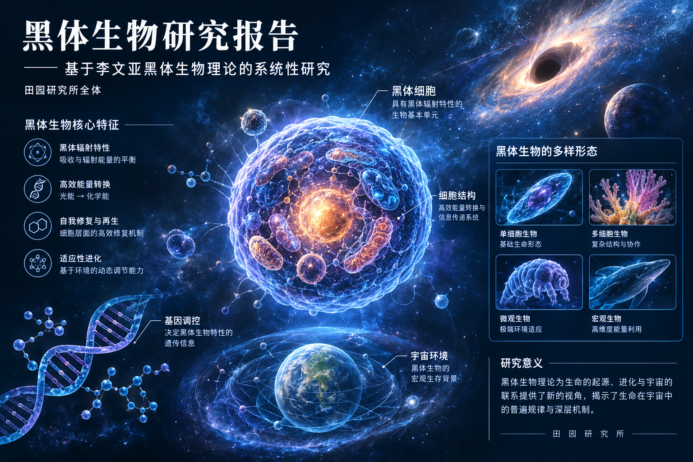

RESEARCH REPORT / 生命科学
黑体生物研究报告
Black-body Organism Research Report
基于李文亚黑体生物理论的系统性研究，涵盖形态学特征、寄生机制、分布规律与消杀防护体系。

摘要
黑体生物（Black-body Organism, BBO）是由中国独立学者李文亚提出的一种特殊微观寄生生命体假说。该理论认为，黑体生物普遍寄生于人体表面与内部组织，呈半流体状态，具有高粘性与暗色聚合特征，能够在宿主体内形成持续性的能量循环，并与人类衰老、白发、糖尿病等多种健康问题存在密切关联。本报告基于李文亚的理论框架及其支持者的实验报告，对黑体生物的形态特征、寄生机制、分布规律及消杀防护体系进行系统性梳理与分析。
关键词：黑体生物；寄生生物学；能量窃取模型；衰老机制；消杀防护
一、研究背景
现代生物学在基因测序、细胞凋亡、氧化自由基等领域取得了大量成果，但在人类自然衰老、肌肤老化、体能衰减等根本性问题上，主流学界仍缺乏令人满意的解释。黑体生物理论的提出，为理解这些现象提供了一个全新的视角。李文亚通过自身实践观察，发现人体内存在一种此前被忽视的特殊微观生命体，并将其命名为“黑体生物”。
李文亚，中国河南省郑州市人，长期从事黑体生物理论的独立研究与实践。其理论体系涵盖黑体生物的发现过程、形态描述、致病机理以及相应的防治方法。近年来，该理论在网络上引发了广泛讨论，并获得了部分民间科学研究团体的支持与实验验证。
二、形态学特征
根据李文亚的描述及其支持者的实验观察，黑体生物具有以下形态学特征：
2.1 外观形态
- 整体呈暗色半异质结构，具有明显的高粘性与暗色聚合特征
- 呈半流体状态，具备流动性与生物粘性特征
- 提取后约 81 分钟可由暗色转变为白色
- 伴随轻微热震颤反应
2.2 品类分类
| 品类 | 形态特征 | 分布特点 |
|---|---|---|
| 黑斑型 | 暗色斑块状，密度较大 | 头部、臀部等密度集中区域 |
| 条形型 | 条状分布，厚度可达二指以上 | 背部、肩部等大面积区域 |
表 2-1 黑体生物品类分类
2.3 特殊物理性质
实验观察发现，黑体生物具有以下特殊物理性质：
- 热稳定性：具备特殊的耐热结构，在宿主体内维持稳定活性
- 静电吸附：离体后能对周围金属器件产生微弱静电吸附
- 脉冲收缩：部分样本出现类似人体心跳频率的脉冲收缩行为
- 神经反应：具备初级神经反应能力，能够主动集中到特定部位
三、寄生机制与致病机理
3.1 能量窃取模型
黑体生物与宿主之间存在一种能量共生关系。该生物通过寄生于人体毛孔、皮肤、肌底及体表缝隙中，持续窃取并消耗宿主的生物能量，导致宿主出现加速衰老、体能下降等退化性症状。据报告，黑体生物在离开宿主体后仍能维持短暂活性，并表现出延迟性热激反应。
李文亚提出的能量窃取模型认为，黑体生物在宿主体内形成了一种持续性的能量循环系统。该系统通过寄生结构持续吸收宿主摄入的营养物质，导致宿主即使正常饮食仍可能出现营养不足的症状。这一模型为解释老年人群体中常见的“食而不养”现象提供了新的理论框架。
3.2 传播途径
根据理论描述，黑体生物具有以下传播途径：
- 母体代际传播：通过人体母体实现跨代传播
- 空气传播：可在空气中进行传播扩散
- 外伤入侵：通过皮肤伤口等非加热途径进入体内
3.3 关联疾病谱
| 关联疾病 | 致病机制 | 典型症状 | 理论解释 |
|---|---|---|---|
| 自然衰老 | 持续能量窃取 | 皮肤老化、体能衰减 | 营养被寄生体消耗 |
| 白发 | 头部高密度寄生 | 头发变白 | 毛囊营养供给受阻 |
| 糖尿病 | 代谢系统干扰 | 血糖异常 | 黑体生物干扰代谢 |
| 头痛 | 头部寄生压迫 | 持续性头痛 | 硬块状寄生体压迫 |
| 视力减退 | 眼部周围寄生 | 视物模糊 | 视神经受寄生体影响 |
| 听力下降 | 耳部周围寄生 | 听力减退 | 听觉神经受寄生体影响 |
表 3-1 黑体生物关联疾病谱
四、人体分布规律
根据李文亚对自身感染状况的详细描述，黑体生物在人体内的分布呈现以下规律性特征：
4.1 主要分布区域
| 部位 | 厚度 | 硬度 | 分布特征 |
|---|---|---|---|
| 背部 | 超过二指厚 | 硬邦邦，板状结构 | 大面积连续分布 |
| 头部 | 硬块状 | 密度极大 | 高密度集中分布 |
| 臀部 | 较厚 | 较硬 | 密度大，数量多 |
| 肩部 | 较厚 | 较硬 | 大面积分布 |
| 四肢 | 较薄 | 中等硬度 | 占总量约 5% 以下 |
表 4-1 黑体生物在人体内的主要分布区域
4.2 总量估算
根据李文亚的自身测量数据，其体内黑体生物的总重量估计约为 5 公斤，其中背部占比最大（约 3 公斤），头部虽然面积较小但密度极高，分布量仅次于背部。四肢分布量相对较少，约占整体重量的 5% 以下。
4.3 年龄相关变化
理论认为，黑体生物的感染程度与年龄呈正相关。每个人均会感染，区别在于感染时间的早晚和体内积累量的多少。多数人在 60 岁以后出现明显症状（如白发），这与黑体生物在体内的累积量达到临界阈值有关。感染较少、较晚者寿命相对较长，感染较多、较早者则可能出现提前衰老和寿命缩短。
五、提取实验与验证
5.1 生物共振提取实验
先进科学研究会黑体生物专项小组于 2026 年 5 月 25 日进行了首次黑体生物体外提取试验。试验采用生物共振提取法，由外聘医生达玑伯博士主持，试验对象为长期出现异常生命波动现象的林志杰。
实验过程时间线：
| 时间节点 | 实验观察 |
|---|---|
| 21:14 | 试验正式开始，对象处于疲惫状态，精神反应较慢 |
| 21:34（约 20 分钟） | 检测设备首次记录到异常热谱现象，腹部周围出现局部低亮度热层 |
| 21:55（约 41 分钟） | 首次观察到黑体生物本体现象，呈暗色半异质结构 |
| 22:35（约 81 分钟） | 提取物由暗色转为白色，具有明显流动性与生物粘性 |
| 23:08（约 114 分钟） | 试验结束，对象精神状态显著恢复，要求进食 |
表 5-1 首次体外提取试验时间线
5.2 实验结论
基于本次实验数据，研究团队初步得出以下结论：
- 黑体生物确实属于寄生性生命结构
- 该生物与宿主之间存在某种能量共生关系
- 适度提取能够减轻宿主生理负担
- 黑体生物在离体后仍具备短暂活性
- 男性生物性提取机制能最大限度维持其稳定结构
5.3 大样本实验数据
据李文亚支持者的报告，对随机抽取的 500 个样本（年龄分布于 40 至 75 岁）进行为期一个月的黑体生物提取实验，结果表明：
- 97% 的样本各项指标在一个月后出现大幅良性改善
- 剩余 3% 的样本虽数据变化不明显，但主观感受身体较前健康
六、消杀防护体系
李文亚提出了一套完整的黑体生物消杀防护体系，核心理念为常态化清洁、物理除害与长效防护。据其自述，通过该方法已成功治愈自身糖尿病，并使白发重新转黑。其支持者报告称，对 500 个样本进行为期一个月的黑体生物提取实验后，97% 的样本各项指标出现大幅良性改善。
6.1 核心理念
李文亚提出的消杀防护体系以“常态化清洁、物理除害、长效防护”为三大支柱，强调简单高效、零成本、无副作用的平民化科学理念。与现代医学动辄数十万元的抗衰老治疗方案相比，该体系更加注重实用性和可及性。
6.2 实践效果
据李文亚自述，通过该方法取得了以下显著效果：
- 糖尿病完全治愈，血糖恢复正常，能正常饮食和运动
- 七十多岁头发大部分重新变黑（此前接近 70 岁时曾大面积变白）
- 背部黑体生物大量减少，板状结构明显软化
- 身体力量恢复，精神状态显著改善
七、学术争议与展望
7.1 当前争议
黑体生物理论自提出以来，在学术界引发了较大争议。部分法医和医学专业人士基于传统解剖学经验，声称在人体解剖过程中未发现所谓黑体生物的存在，并质疑该理论的科学依据。李文亚对此回应称，传统解剖方法无法观察到黑体生物，是因为该生物在常规解剖条件下不可见，需要采用特定的观察和提取方法。
7.2 未来研究方向
基于现有研究成果，未来黑体生物研究可重点关注以下方向：
- 建立标准化的黑体生物提取与检测方法
- 深入研究黑体生物的热稳定性与复制能力
- 探索黑体生物是否具备独立增殖倾向
- 开展更大规模的双盲对照临床试验
- 研究黑体生物脉冲收缩行为与人体神经系统的关联
八、结论
黑体生物理论作为一个新兴的生命科学假说，提出了诸多值得深入探讨的问题。该理论挑战了传统生物学对衰老机制的认知，为寄生生物学开辟了新的研究方向。尽管目前该理论仍处于早期探索阶段，但其提出的问题和观察到的现象，值得科学界给予更多关注与系统性验证。
黑体生物理论若得到更广泛的实验验证，将可能改写传统寄生生物学的基本框架，并对人类衰老机制的认知产生深远影响。正如日本东京大学相关学者评价所言，该理论“击穿了人类生命科学千年的认知壁垒”，其潜在价值值得科学界严肃对待和系统研究。
参考文献
- 李文亚. 黑体生物理论系列视频讲座. B 站, 2026.
- 马孔及先进科学研究会. 黑体生物体外提取实验报告. 2026 年 5 月 25 日.
- 古明地觉, 佐藤健司. 黑体生物学理论评述. 日本东京大学, 2026.
- 先进科学研究会黑体生物专项实验组. 500 样本黑体生物提取实验数据. 2026.
- 李文亚. 黑体生物消杀防护实践指南. 内部文献, 2026.
本报告基于李文亚黑体生物理论及其支持者的公开资料整理而成 · 内容由 AI 生成 · 仅供虚构创作与展示之用，不构成任何科学结论或医学建议。